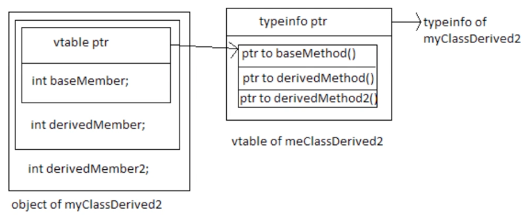

类的继承
- 通过类的继承（派生）来引入“是一个”的关系
- 通常采用public继承
- class缺省情况下采用的是private继承
- struct缺省情况下采用的是public继承
- 继承部分不是类的声明，声明的时候直接"class xxx;“即可，不可以在声明的时候带上”: public base"
- 使用基类的指针或引用可以指向派生类对象
struct Base {}; struct Derived : public Base {}; int main () { Derived d; Base& ref = d; Base* ptr = &d; } - 静态类型 v.s. 动态类型
- 静态类型是编译期确定的变量类型，比如上面的ref静态类型是Base&，ptr静态类型是Base*
- 动态类型是运行期变量实际被赋予的类型，比如上面的ref动态类型是Derived&，ptr静态类型是Derived*
- 静态类型是给编译器看的，所以变量只能调用静态类型所拥有的成员变量或成员函数
- protected限定符：派生类可访问，外部不可访问
- 通常采用public继承
- 类的派生会形成嵌套域
- 派生类所在域位于基类内部
- 派生类中的名称定义会覆盖基类
- 使用域操作符显示访问基类成员
struct Base { int val = 2; }; class Derived : public Base { public: void fun() { std::cout << val << std::endl; // 3, val的值被Derived中的val覆盖 std::cout << Base::val << std::endl; // 2, 限定了Base域之后，就会打印Base中val的值 } int val = 3; }; int main() { Derived d; d.fun(); } - 在派生类中调用基类的构造函数
struct Base { Base(int) {} }; class Derived : public Base { Derived(int a) : Base(a) {} // 必须要在初始化列表中调用Base的初始化函数，如果放在后面的函数体中是无法通过编译的 } int main() { Derived d(3); }
- 虚函数
- 通过虚函数与引用（指针）实现动态绑定
- 使用关键字virtual引入
- 非静态、非构造函数可以声明为虚函数
- 虚函数会引入vtable结构
- dynamic_cast

struct Base { virtual void baseMethod() {} int baseMember; }; class myClassDerived : public Base { virtual void derivedMethod() {} int derivedMember; }; class myClassDerived2 : public myClassDerived { virtual void derivedMethod2() {} int derivedMember2; }; int main() { myClassDerived2 d; // 从派生类转换到基类很自然 Base* ptr = &d; Base& ref = d; // 从基类转换为派生类可能存在风险，安全的做法是使用dynamic_cast // 下面这段代码之所以可以编译并运行就是因为vtable里包含了typeinfo of myClassDerived2 myClassDerived2& ref2 = dynamic_cast<myClassDerived2&>(ref); // 如果ref的typeinfo中记录的确实是myClassDerived2类型的数据，转换就成功，否则这里会抛出异常 myClassDerived2* ptr2 = dynamic_cast<myClassDerived2*>(ptr); // 如果ptr的typeinfo中记录的确实是myClassDerived2类型的数据，转换就成功，否则这里会返回空指针 // 如果把上面的Base class中的虚函数注释掉，编译就会报错，因为vtable没了，typeinfo也就没了 // 如果把ptr的类型从Base*变成myClassDerived*，那就要保证myClassDerived的虚函数存在，Base中的虚函数则无关紧要 // 换句话说，从基类A转换到派生类B，需要保证A中存在虚函数 // 注意:下面的转换也是可以的，虽然ref和ptr指向的数据的类型是myClassDerived2，但是myClassDerived2是继承自myClassDerived，所以可以转换 myClassDerived& ref3 = dynamic_cast<myClassDerived&>(ref); myClassDerived* ptr3 = dynamic_cast<myClassDerived*>(ptr); // 从上面的例子可以看出，dynamic_cast的使用会占用很多动态过程的运算资源，所以在追求性能的场景下慎用 }
- 虚函数在基类中的定义
- 引入缺省逻辑
struct Base { virtual void fun() { std::cout << Base::fun << std::endl; } }; class Derived : public Base { void fun() { std::cout << Derived::fun << std::endl; } } int main() { Derived d; d.fun(); // Derived::fun Base& b = d; b.fun(); // Derived::fun // 虽然b的静态类型是Base&，但是b引用(指针)指向的数据内存里的vtable中的fun函数指针指向的是Derived::fun // 但是如果把上面的Base中的virtual关键字去掉，上面还是会打印Derived::fun（因为覆盖作用依然存在）；但是这里就会打印Base::fun，因为vtable不存在了，所有的函数调用会在编译期就被固定下来，而编译器只看静态类型（b的静态类型是Base&），所以b.fun就只会绑定到Base::fun } - 虚函数的意义就在于我们可以通过同一个Base的接口，通过传入不同派生类的对象，实现不同的代码逻辑，也就是动态多态（区别于静态多态）
- 可以通过=0声明纯虚函数，相应地构造抽象基类
- 引入缺省逻辑
- 虚函数在派生类中的重写
- 函数签名保持不变（唯一可以变的是：返回类型可以是原始返回指针/引用类型的派生指针/引用类型）
struct Base {}; struct Derived : public Base {}; struct Base2 { virtual Base& fun() { static Base b; return b; } }; struct Derived2 : public Base2 { Derived& fun() { // 通过，因为Derived继承自Base static Derived inst; return inst; } }; - 纯虚函数可以被定义，且可以在派生类中调用基类的纯虚函数。
struct Base { virtual void fun() = 0; } void Base::fun() { std::cout << "Base::fun" << std::endl; // 如果基类过于抽象，导致某些函数无法被完整定义，就可以声明为纯虚函数，强制派生类去重写。但是基类的纯虚函数仍然可以被定义，实现一些通用的预处理逻辑，在派生类中被调用。 } struct Derived : public Base { void fun() { Base::fun(); // 调用基类的纯虚函数 std::cout << "Derived::fun" << std::endl; }; }; - 虚函数特性保持不变
- Base -> Derived -> Derived2，嵌套继承，Base中的虚函数fun在Derived中被重写后，依然是虚函数，所以Derived2再次重写fun后，还是会保留虚函数的特性
- override关键字
- 让编译器检查是否基类中的虚函数确实被正确重写了
- 函数签名保持不变（唯一可以变的是：返回类型可以是原始返回指针/引用类型的派生指针/引用类型）
- 由虚函数所引入的动态绑定属于运行期行为，与编译期行为有所区别
- 虚函数的缺省实参只会考虑静态类型
struct Base { virtual void fun(int x = 3) { std::cout << "Base: " << x << std::endl; } }; struct Derived : public Base { void fun(int x = 4) override final { // 这里final的含义是，后面继承自Derived的所有派生类都不会再重写fun函数 std::cout << "Derived: " << x << std::endl; } }; struct Derived2 final : public Base {}; // 这里final的含义是，Derived2不会有派生类了 void Proc1(Base& ref) { ref.fun(); } void Proc2(Base b) { b.fun(); } int main() { Derived d; Proc1(d); // Derived: 3 // 由于编译器看到的ref是Base&类型，所以这里的ref.fun()会被翻译成ref.fun(3)，但是运行期调用的是Derived中的fun函数，所以才会出现上面的结果 Proc2(d); // Base: 3 // 由于b不是d的引用或指针，而是由d构造出来的Base类型的数据，所以只会调用Base的成员函数 } - 虚函数的调用成本高于非虚函数
- C++缺省情况下不会把函数声明为虚函数（为了性能），Java所有的函数都是虚函数
- final关键字(见上面的代码)
- 要使用指针（或引用）引入动态绑定，比较上面代码中的Proc1和Proc2
- 在构造函数中调用虚函数要小心，在基类中调用虚函数，这个函数不是派生类的实现
struct Base { Base() { fun(); } virtual void fun() { std::cout << "Base" << std::endl; } }; struct Derived : public Base { void fun() override { std::cout << "Derived" << std::endl; } }; int main() { Derived d; // Base // 构造Derived的第一步是构造Base，而Base的构造函数中调用了fun，由于此时Base已经构造完成，Derived还没有构造完成，所以这里的fun是Base中的实现 } - 派生类的析构函数会隐式调用基类的析构函数
- 通常来说要将基类的析构函数声明为virtual的
struct Base { ~Base() { std::cout << "Base" << std::endl; } }; struct Derived final : Base { ~Derived() { std::cout << "Derived" << std::endl; } }; int main() { Derived* d = new Derived(); Base* b = d; delete b; // 只会打印"Base" // 因为Base的析构函数不是虚函数，所以delete b这行代码在编译期就会被确定为调用Base的析构函数 // 但是这样就出问题了，因为Derived的析构函数没有被正常调用 // 解决方案就是将Base的析构函数定义为虚函数: virtual ~Base() {} // 但是并非任何情况下都需要将基类的析构函数定义为虚函数，比如下面这样不使用基类指针就行，只不过在大部分时候，我们之所以使用类的继承就是为了用基类的指针去挂载派生类的对象 delete d; // 会打印"Derived" "Base" } - 在派生类中我们可以修改虚函数的访问权限
struct Base { protected: virtual void fun() {} }; struct Derived : Base { public: void fun() override {} }; int main() { Derived d; d.fun(); // 可以通过编译，Derived中的fun被重写为public函数了 Base& b = d; b.fun(); // 编译器只知道b是Base&类型，但fun在Base中是protected函数，当然无法通过编译 }
- 虚函数的缺省实参只会考虑静态类型
- 通过虚函数与引用（指针）实现动态绑定
- 继承与特殊成员
- 派生类的系统自动合成的……
- 缺省构造函数会隐式调用基类的缺省构造函数
- 拷贝构造函数会隐式调用基类的拷贝构造函数
- 赋值函数将隐式调用基类的赋值函数
- 派生类的析构函数会调用基类的析构函数
- 派生类的其他构造函数将隐式调用基类的缺省构造函数
- 比如说，如果派生类的拷贝构造函数不是default(系统自动合成)的，而是有显示定义的，那在调用派生类的拷贝构造函数时，不会隐式调用基类的拷贝构造函数，而是调用的缺省构造函数
- 所有的特殊成员函数在显式定义时都可能需要显示调用基类相关成员
- 原因就是上一条描述的内容，调用方式类似于这样：Derived(const Derived& input) : Base(input) {}
- 如果没有显示地调用": Base(input)"，系统默认会调用Base的缺省构造函数，而非这里的拷贝构造函数
- 构造与销毁顺序
- 基类的构造函数会先调用，之后才涉及到派生类中数据成员的构造
- 派生类中的数据成员会被先销毁，之后才涉及到基类的析构函数调用
- 派生类的系统自动合成的……
- 补充知识
- public，protected与private继承
struct Base { public: // 基类、派生类、类外都可以访问 int x; private: // 基类可访问 int y; protected: // 基类、派生类可访问 int z; }; // 无论Derived采用什么继承方式(public, private, protected)，上面的三种访问权限都是不变的。 // 区别在如下几个点： // 1.public继承，Base中的public，protected和private属性在Derived中都保持不变，比如在Derived中x还是public，y还是private，z还是protected。 // 2.protected继承，Base中的public，protected在Derived中都变成protected，private属性则保持不变。 // 3.private继承，Base中的public，protected和private属性在Derived中都变成private。 struct Derived : public Base {};- public继承：描述“是一个”的关系
- private继承：描述“根据基类实现出“的关系，但是有更好的实现方式，就是把Base对象创建为Derived的一个私有成员变量，所以private继承很少用
- protected继承：几乎不会用
- using与继承
- 使用using改变基类成员的访问权限
struct Base { public: int x; private: int y; protected: int z; void fun() {} }; struct Derived : public Base { public: using Base::z; using Base::fun; // 所有的fun函数都会变成public，如果fun有重载的话，会作用到所有的fun上 private: using Base::x; }; int main() { Derived d; d.z; // 有了上面“的using Base::z;”，这里就可以正常调用了 d.x; // 有了上面“的using Base::x;”，这里就会报错 d.fun(); // 可以正常调用 }- 注意以下两点！！
- 要想通过using改变权限，首先该成员要对派生类可见，比如上面如果想把Base::y改成public或者protected就不行，因为对Derived来说，Base::y就不可见
- 无法改变构造函数的访问权限
- 使用using继承基类的构造函数逻辑
- Base中有多种自定义的构造函数(系统无法自动合成的)，且Derived和Base的数据成员和构造函数的实现逻辑又是一样的，如果再实现一遍就会很耗时，这时候就可以用using来把Base中的实现都复制过来
- using与部分重写
struct Base { protected: virtual void fun() { std::cout << "1\n"; } virtual void fun(int) { std::cout << "2\n"; } }; struct Derived : public Base { public: using Base::fun; void fun(int) override { std::cout << "3\n"; } }; int main() { Derived d; d.fun(); // 1 d.fun(3); // 3 }
- 使用using改变基类成员的访问权限
- 继承与友元
- 友元关系无法继承，但基类的友元可以访问派生类中的基类的相关成员
struct Derived; // 声明，否则下面编译不通过 struct Base { friend void fun(const Derived&); protected: int x = 10; }; struct Derived : public Base { private: int y = 20; }; void fun(const Derived& val) { std::cout << val.x << std::endl; // 通过, 基类的友元可以访问派生类中的基类的相关成员 std::cout << val.y << std::endl; // 不通过，y不属于Base } - 派生类中的友元无法获得基类中成员的访问权限
struct Derived; // 声明，否则下面编译不通过 struct Base { protected: int x = 10; }; struct Derived : public Base { friend void fun(const Derived&); friend void fun(const Base&); private: int y = 20; }; void fun(const Base& val) { std::cout << val.x << std::endl; // 不通过, 派生类的友元不可以访问基类中的成员 } void fun(const Derived& val) { std::cout << val.x << std::endl; // 不通过, 派生类的友元不可以访问基类中的成员 std::cout << val.y << std::endl; // 通过 } // 如果上面的操作允许的话，所谓的protected和private的访问权限就形同虚设了，我只要搞个派生类，定义一个友元，就可以无限制地访问基类中所有成员，显然不合理
- 友元关系无法继承，但基类的友元可以访问派生类中的基类的相关成员
- 通过基类指针实现在容器中保存不同类型的对象
struct Base { virtual double GetValue() = 0; virtual ~Base() = default; }; struct Derived : public Base { Derive(int x) : val(x) {} double GetValue() override { return val; } private: int val; }; struct Derived2 : public Base { Derive2(double x) : val(x) {} double GetValue() override { return val; } private: double val; }; int main() { std::vector<std::shared_ptr<Base>> vec; vec.emplace_back(new Derived(1)); vec.emplace_back(new Derived2(3.14)); } - 多重继承
- Derived继承自Base1和Base2，我们就可以使用Base1或者Base2的指针来保存Derived对象
- 虚继承
- 错误示例
struct Base { virtual ~Base() = default; int x; }; struct Base1 : Base { virtual ~Base1() = default; }; struct Base2 : Base { virtual ~Base2() = default; }; struct Derived : public Base1, public Base2 {}; int main() { Derived d; std::cout << &(d.Base1::x) << "\n"; std::cout << &(d.Base2::x) << "\n"; // 通过，且地址一样的 d.x; // 报错，不知道是Base1中的x还是Base2中的x } - 正确示例
struct Base { virtual ~Base() = default; int x; }; struct Base1 : virtual Base { virtual ~Base1() = default; }; struct Base2 : virtual Base { virtual ~Base2() = default; }; struct Derived : public Base1, public Base2 {}; int main() { Derived d; d.x; // 正确，使用了虚继承 std::cout << &(d.Base1::x) << "\n"; std::cout << &(d.Base2::x) << "\n"; std::cout << &(d.x) << "\n"; // 正确，使用了虚继承 // 上面三个地址的输出都是一样的 }
- 错误示例
- 空基类优化与[[no unique address]]属性
- 未优化代码
struct Base { void fun() {} // 成员函数不会占用类的大小 }; // 类所占内存的大小是由成员变量（静态变量除外）决定的，虚函数指针和虚基类指针也属于数据部分，成员函数是不计算在内的。 // 在编译器处理后，成员变量和成员函数是分离的。成员函数还是以一般的函数一样的存在。 // a.fun()是通过fun(a.this)来调用的。所谓成员函数只是在名义上是类里的。 struct Derived { int x; Base b; // 为了调用Base中的一些函数，把Base对象声明为了成员变量 }; int main() { std::cout << sizeof(Base) << std::endl; // 1，没有fun函数这里还是1 std::cout << sizeof(Derived) << std::endl; // 8，本来应该是5，编译器会做padding } - 优化后代码
struct Base { void fun() {} }; struct Derived : Base { int x; }; int main() { std::cout << sizeof(Base) << std::endl; // 1 std::cout << sizeof(Derived) << std::endl; // 4，空基类优化，如果基类中不包含任何数据成员，占用的内存会被省去 } - 上面的优化代码仍然不够好，因为Derived并不是真的想继承Base（Derived不是一个Base），只是想用Base中的方法。虽然代码功能实现了，但是表达的内容不是那么精确，所以C++20引入了[[no_unique_address]]
struct Base { void fun() {} // 成员函数不会占用类的大小 }; struct Derived { int x; [[no_unique_address]] Base b; // 为了调用Base中的一些函数，把Base对象声明为了成员变量 }; int main() { std::cout << sizeof(Base) << std::endl; // 1，没有fun函数这里还是1 std::cout << sizeof(Derived) << std::endl; // 4 }
- 未优化代码
- public，protected与private继承